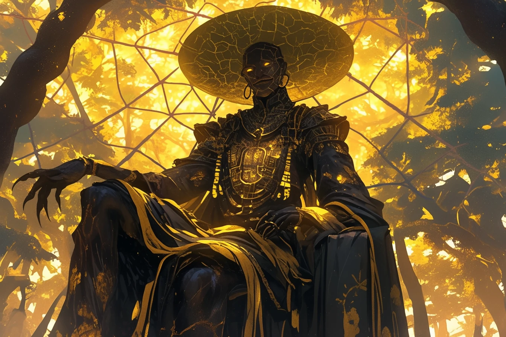

MONSTRE DU LOCH NESS
Le monstre du Loch Ness, surnommé Nessie, est une créature légendaire censée vivre dans le lac Loch Ness en Écosse.

Le monstre du Loch Ness, surnommé Nessie, est une créature légendaire censée vivre dans le lac Loch Ness en Écosse.
Anansi, l'araignée rusée, est un dieu mythologique d'Afrique de l'Ouest, symbolisant la sagesse et la ruse.
Un phénomène mystérieux à Paris, où des lumières inexpliquées sont apparues dans certains quartiers.